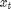
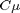

Using the Kalman Filter to Estimate and Forecast the Diebold-Li Yield Curve Model
In the aftermath of the financial crisis of 2008, additional solvency regulations have been imposed on many financial firms, placing greater emphasis on the market valuation and accounting of liabilities. Many firms, notably insurance companies and pension funds, write annuity contracts and incur long-term liabilities that call for sophisticated approaches to model and forecast yield curves.
Moreover, as the value of long-term liabilities greatly increases in low interest rate environments, the probability of very low yields should be modeled accurately. In such situations, the use of the Kalman Filter, with its ability to incorporate time-varying coefficients and infer unobserved factors driving the evolution of observed yields, is often appropriate for the estimation of yield curve model parameters and the subsequent simulation and forecasting of yields, which are at the heart of insurance and pension analysis.
The following example illustrates the use of the State-Space Model (SSM) and Kalman filter by fitting the popular Diebold-Li yields-only model [2] to a monthly time series of yield curves derived from government bond data. The example highlights the estimation, simulation, smoothing, and forecasting capabilities of the SSM functionality available in the Econometrics Toolbox™, and compares its estimation performance to that of more traditional econometric techniques.
The example first introduces the Diebold-Li model, then outlines the parametric state-space representation supported by the SSM functionality of the Econometrics Toolbox, and then illustrates how the Diebold-Li model may be formulated in state-space representation. Once formulated in state-space representation, the example reproduces the in-sample estimation results published in [2], and compares the results obtained to those of the two-step approach as outlined by Diebold and Li in [1].
The example concludes with a simple illustration of the minimum mean square error (MMSE) forecasting and Monte Carlo simulation capabilities of the SSM functionality.
Contents
- The Diebold-Li Model Yield Curve Model
- The State-Space Model (SSM) of the Econometrics Toolbox
- State-Space Formulation of the Diebold-Li Model
- The Yield Curve Data
- Two-Step Estimation of the Diebold-Li Model
- SSM Estimation of the Diebold-Li Model
- Comparison of Parameter Estimation Results
- Comparison of Inferred Factors
- Forecasting and Monte Carlo Simulation
- Summary
- Bibliography
The Diebold-Li Model Yield Curve Model
The Diebold-Li model is a variant of the Nelson-Siegel model [3], obtained by reparameterizing the original formulation. For observation date and time to maturity , the Diebold-Li model characterizes the yield as a function of four parameters:
in which is the long-term factor, or level, is the short-term factor, or slope, and is the medium-term factor, or curvature. determines the maturity at which the loading on the curvature is maximized, and governs the exponential decay rate of the model.
The State-Space Model (SSM) of the Econometrics Toolbox
The ssm function of the Econometrics Toolbox allows users to specify a given problem in state-space representation. Once the parametric form of an SSM is specified, additional related functions allow users to estimate model parameters via maximum likelihood, obtain smoothed and filtered states via backward and forward recursion, respectively, obtain optimal forecasts of unobserved (latent) states and observed data, and simulate sample of paths of latent states and observed data via Monte Carlo.
For state vector  and observation vector , the parametric form of the Econometrics Toolbox SSM is expressed in the following linear state-space representation:
where and are uncorrelated, unit-variance white noise vector processes. In the above SSM representation, the first equation is referred to as the state equation and the second as the observation equation. The model parameters ,  , and are referred to as the state transition, state disturbance loading, measurement sensitivity, and observation innovation matrices, respectively.
, and are referred to as the state transition, state disturbance loading, measurement sensitivity, and observation innovation matrices, respectively.
Although the SSM functions in the Econometrics Toolbox will accommodate time-varying (dynamic) parameters , , and whose values and dimensions change with time, in the Diebold-Li model these parameters are time-invariant (static).
State-Space Formulation of the Diebold-Li Model
The Diebold-Li model introduced above is formulated such that the level, slope, and curvature factors follow a vector autoregressive process of first order, or VAR(1), and as such the model immediately forms a state-space system. Using the notation of Diebold, Rudebusch, and Aruoba [2], the state transition equation, which governs the dynamics of the state vector (level, slope, and curvature factors), is written as
The corresponding observation (measurement) equation is written as
![$$ \begin{pmatrix} {y_t(\tau_1) \cr y_t(\tau_2) \cr \vdots \cr
y_t(\tau_N)} \end{pmatrix} =
\begin{pmatrix} {1 \ \frac{1 - e^{-\lambda \tau_1}}{\lambda \tau_1} \
\frac{1 - e^{-\lambda \tau_1}}{\lambda \tau_1} - e^{-\lambda \tau_1} \cr
1 \ \frac{1 - e^{-\lambda \tau_2}}{\lambda \tau_2} \
\frac{1 - e^{-\lambda \tau_2}}{\lambda \tau_2} - e^{-\lambda \tau_2} \cr
\vdots \cr
1 \ \frac{1 - e^{-\lambda \tau_N}}{\lambda \tau_N} \
\frac{1 - e^{-\lambda \tau_N}}{\lambda \tau_N} - e^{-\lambda \tau_N}} \end{pmatrix}
\begin{pmatrix} {L_t \cr S_t \cr C_t} \end{pmatrix}
+ \begin{pmatrix} {e_t(\tau_1) \cr e_t(\tau_2) \cr \vdots \cr
e_t(\tau_N)} \end{pmatrix}$$](Diebold_Li_Webinar_eq08980.png)
In vector-matrix notation, the Diebold-Li model is rewritten as the following state-space system for the 3-D vector of mean-adjusted factors and observed yields :
where the orthogonal, Gaussian white noise processes and are defined such that
Moreover, the Diebold-Li model is formulated such that the state equation factor disturbances are correlated, and therefore the corresponding covariance matrix is non-diagonal. In contrast, however, the model imposes diagonality on the covariance matrix of the observation equation disturbances such that deviations of observed yields at various maturities are uncorrelated.
Define the latent states as the mean-adjusted factors
and the intercept-adjusted, or deflated, yields
and substitute into the equations above, and the Diebold-Li state-space system may be rewritten as
Now compare the Diebold-Li state-space system to the formulation supported by the SSM functionality of the Econometrics Toolbox,
From the above state-space systems, we immediately see that the state transition matrix is the same in both formulations and that Diebold-Li matrix is simply the state measurement sensitivity matrix in the SSM formulation.
The relationship between the disturbances, however, and therefore the parameterization of the and matrices of the SSM formulation, is more subtle. To see this relationship, notice that
Since the disturbances in each model must be the same, the covariance of in the Diebold-Li formulation must equal the covariance of the scaled white noise SSM process . Similarly, the covariance of must equal that of the process  . Moreover, since the and disturbances in the SSM formulation are defined as uncorrelated, unit-variance white noise vector processes, their covariance matrices are identity matrices.
. Moreover, since the and disturbances in the SSM formulation are defined as uncorrelated, unit-variance white noise vector processes, their covariance matrices are identity matrices.
Therefore, in an application of the linear transformation property of Gaussian random vectors, the covariances of the Diebold-Li formulation are related to the parameters of the SSM formulation such that

To formulate the Diebold-Li model in a manner amenable to estimation by the Econometrics Toolbox, users must first create an SSM model with the ssm function. Moreover, an SSM model may be created with unknown parameters defined explicitly or implicitly.
To create an SSM model explicitly, all required matrices , , , and must be supplied. In the explicit approach, unknown parameters appear as NaN values to indicate the presence and placement of unknown values; each NaN entry corresponds to a unique parameter to estimate.
Although creating a model explicitly by directly specifying parameters , , , and is sometimes more convenient than specifying a model implicitly, the utility of an explicit approach is limited in that each estimated parameter affects and is uniquely associated with a single element of a coefficient matrix.
To create a model implicitly, users must specify a parameter mapping function which maps an input parameter vector to model parameters , , , and . In the implicit approach, the mapping function alone defines the model, and is particularly convenient for estimating complex models and for imposing various parameter constraints.
Moreover, the SSM framework does not store non-zero offsets of state variables or any parameters associated with regression components in the observation equation. Instead, a regression component is estimated by deflating the observations . Similarly, other related SSM functions, such as filter, smooth, forecast, and simulate, assume that observations are already manually deflated, or preprocessed, to account for any offsets or regression component in the observation equation.
Since the Diebold-Li model includes a non-zero offset (mean) for each of the three factors, which represents a simple yet common regression component, this example uses a mapping function. Moreover, the mapping function also imposes a symmetry constraint on the covariance matrix and a diagonality constraint of the covariance matrix , both of which are particularly well-suited to an implicit approach. In addition, the mapping function also allows us to estimate the decay rate parameter as well.
Note that this state-space formulation, and the corresponding approach to include a regression component, is not unique. For example, the factor offsets could also be included by increasing the dimensionality of the state vector.
In the approach taken in this example, the inclusion of the factor offsets in the state equation of the SSM representation introduces a regression component in the observation equation. To allow for this adjustment, this example uses a parameter mapping function to deflate the observed yields during model estimation. The advantage of this approach is that the dimensionality of state vector of unobserved factors remains 3, and therefore directly corresponds to the 3-D yields-only factor model of Diebold, Rudebusch, and Aruoba [2]. The disadvantage is that, because the estimation is performed on the deflated yields, other SSM functions must also account for this adjustment by deflating and subsequently inflating the yields.
The Yield Curve Data
The yield data consists of a time series of 29 years of monthly unsmoothed Fama-Bliss US Treasury zero-coupon yields, as used and discussed in [1] and [2], for maturities of 3, 6, 9, 12, 15, 18, 21, 24, 30, 36, 48, 60, 72, 84, 96, 108, and 120 months. The yields are expressed in percent and recorded at the end of each month, beginning January 1972 and ending December 2000 for a total of 348 monthly curves of 17 maturities each. For additional details regarding the unsmoothed Fama-Bliss yields, see the bibliography.
The following analysis uses the entire Diebold-Li data set to reproduce the estimation results published in [2], and compares the two-step and SSM approaches.
As an alternative, the data set could also be partitioned into an in-sample period used to estimate each model, and an out-of-sample period reserved to assess forecast performance. In concept, such a forecast accuracy analysis could be conducted in a manner similar to that published in Tables 4-6 of Diebold and Li [1]. However, to do so would take far too long to complete, and is therefore unsuitable for a live MATLAB example.
load Data_DieboldLi maturities = maturities(:); % ensure a column vector yields = Data(1:end,:); % in-sample yields for estimation
Two-Step Estimation of the Diebold-Li Model
In their original paper [1], Diebold and Li estimate the parameters of their yield curve model using a two-step approach:
- With held fixed, estimate the level, slope, and curvature parameters for each monthly yield curve. This process is repeated for all observed yield curves, and provides a 3-D time series of estimates of the unobserved level, slope, and curvature factors.
- Fit a first-order autoregressive model to the time series of factors derived in the first step.
By fixing in the first step, what would otherwise be a non-linear least squares estimation is replaced by a relatively simple ordinary least squares (OLS) estimation. Within the Nelson-Siegel framework, it is customary to set = 0.0609, which implies that the value at which the loading on the curvature (medium-term factor) is maximized occurs at 30 months.
Moreover, since the yield curve is parameterized as a function of the factors, forecasting the yield curve is equivalent to forecasting the underlying factors and evaluating the Diebold-Li model as a function of the factor forecasts.
The first step equates the 3 factors (level, slope, and curvature) to the regression coefficients obtained by OLS, and accumulates a 3-D time series of estimated factors by repeating the OLS fit for each observed yield curve. The OLS step is performed below, and the regression coefficients and residuals of the linear model fit are stored for later use.
lambda0 = 0.0609; X = [ones(size(maturities)) (1-exp(-lambda0*maturities))./(lambda0*maturities) ... ((1-exp(-lambda0*maturities))./(lambda0*maturities)-exp(-lambda0*maturities))]; beta = zeros(size(yields,1),3); residuals = zeros(size(yields,1),numel(maturities)); for i = 1:size(yields,1) olsfit = fitlm(X, yields(i,:)', 'Intercept', false); beta(i,:) = olsfit.Coefficients.Estimate'; residuals(i,:) = olsfit.Residuals.Raw'; end
Now that the 3-D time series of factors has been computed, the second step fits the time series to a first-order autoregressive (AR) model. At this point, there are two choices for the AR fit:
- Fit each factor to a univariate AR(1) model separately, as in [1]
- Fit all 3 factors to a VAR(1) model simultaneously, as in [2]
Although the Econometrics Toolbox supports both univariate and multivariate AR estimation, in what follows a VAR(1) model is fitted to the 3-D time series of factors. For consistency with the SSM formulation, which works with the mean-adjusted factors, the VAR(1) model includes an additive constant to account for the mean of each factor.
model = vgxset('nAR', 1, 'n', 3, 'Constant', true); % 3-D VAR(1) model to fit varfit = vgxvarx(model, beta(2:end,:), [], beta(1,:)); % estimate 3-D VAR(1) model
SSM Estimation of the Diebold-Li Model
As discussed above, the Diebold-Li model is estimated using the implicit approach, in which a parameter mapping function is specified. This mapping function maps a parameter vector to SSM model parameters, deflates the observations to account for the means of each factor, and imposes constraints on the covariance matrices.
The following line of code creates an SSM model by passing the parameter mapping function Example_DieboldLi to the ssm function, and indicates that the mapping function will be called with an input parameter vector params. The additional input arguments to the mapping function specify the yield and maturity information statically, and are used to initialize the function in a manner suitable for subsequent use in the estimation. For additional details, see the helper function Example_DieboldLi.
model = ssm(@(params)Example_DieboldLi(params,yields,maturities));
The maximum likelihood estimation (MLE) of SSM models via the Kalman filter is notoriously sensitive to the initial parameter values. In this example, we use the results of the two-step approach to initialize the estimation.
Specifically, the initial values passed to the SSM estimate function are encoded into a column vector. In this example, the matrix of the SSM model is set to the estimated 3-by-3 AR coefficient matrix of the VAR(1) model stacked in a column-wise manner into the first 9 elements of the column vector.
From the discussion above, the matrix of the SSM model is a 3-by-3 matrix constrained such that , and in what follows the estimate of is the lower Cholesky factor of . Therefore, to ensure that is symmetric, positive definite, and allows for non-zero off-diagonal covariances, 6 elements associated with the lower Cholesky factor of must be allocated in the initial parameter column vector. However, in what follows we initialize the elements of the initial parameter vector with the square root of the estimated innovation variances of the VAR(1) model.
In other words, when the parameter vector is initialized, we assume that the covariance matrix is diagonal, yet still reserve space for the below-diagonal elements of the lower Cholesky factor of the covariance matrix such that . Again, the initial parameter vector is arranged such that the elements of along and below the main diagonal are stacked in a column-wise manner.
Since the covariance matrix in the Diebold-Li formulation is diagonal, the matrix of the SSM model is also constrained to be diagonal such that . Therefore, the elements of the initial parameter vector associated with are set to the square root of the diagonal elements of the sample covariance matrix of the residuals of the VAR(1) model, one such element for each maturity of the input yield data (in this example there are 17 maturities), again stacked in a column-wise manner.
Note that the matrix of the SSM model is not estimated directly, but rather is a fully-parameterized function of the estimated decay rate parameter , and is computed internally by the mapping function. Moreover, the parameter is initialized to the traditional value 0.0609, and is stored in the last element of the initial parameter column vector.
Finally, the elements of the initial parameter vector associated with the factor means are simply set to the sample averages of the regression coefficients obtained by OLS in the first step of the original two-step approach.
A0 = varfit.AR{1}; % get the VAR(1) matrix (stored as a cell array)
A0 = A0(:); % stack it columnwise
Q0 = varfit.Q; % get the VAR(1) estimated innovations covariance matrix
B0 = [sqrt(Q0(1,1)); 0; 0; sqrt(Q0(2,2)); 0; sqrt(Q0(3,3))];
H0 = cov(residuals); % sample covariance matrix of VAR(1) residuals
D0 = sqrt(diag(H0)); % diagonalize the D matrix
mu0 = mean(beta)';
param0 = [A0; B0; D0; mu0; lambda0];
Now that the initial values have been computed, set some optimization parameters and estimate the model using the Kalman filter by calling the SSM function estimate. In this example, the covariance matrix is diagonal, and so we opt to invoke the univariate treatment of a multivariate series to improve the runtime performance of the estimation.
options = optimoptions('fminunc','MaxFunEvals',25000,'algorithm','quasi-newton', ... 'TolFun' ,1e-8,'TolX',1e-8,'MaxIter',1000,'Display','off'); [ssmfit,params] = estimate(model,yields,param0,'Display','off', ... 'options',options,'Univariate',true); lambda = params(end); % get the estimated decay rate mu = params(end-3:end-1)'; % get the estimated factor means
Comparison of Parameter Estimation Results
Now compare the results obtained from the SSM to those of the two-step approach. In addition to providing a sense of how closely the results of the two approaches agree, the comparison also gives an idea of how suitable the use of the two-step approach is for providing initial parameter values required to estimate the SSM.
First compare the estimated state transition matrix of the SSM model to the AR(1) coefficient matrix obtained from the VAR model.
disp('SSM State Transition Matrix (A):') disp('--------------------------------') disp(ssmfit.A) disp(' ') disp('Two-Step State Transition Matrix (A):') disp('-------------------------------------') disp(varfit.AR{1}) disp(' ')
SSM State Transition Matrix (A):
--------------------------------
0.9944 0.0286 -0.0221
-0.0290 0.9391 0.0396
0.0253 0.0229 0.8415
Two-Step State Transition Matrix (A):
-------------------------------------
0.9901 0.0250 -0.0023
-0.0281 0.9426 0.0287
0.0518 0.0125 0.7881
Notice how closely the results agree. In particular, notice the large positive diagonal elements, indicating persistent self-dynamics of each factor, while at the same time the small off-diagonal elements, indicating weak cross-factor dynamics.
Now examine the state disturbance loading matrix and compare the corresponding innovations covariance matrix obtained from the SSM to the innovations covariance of the VAR(1) model.
home disp('SSM State Disturbance Loading Matrix (B):') disp('-----------------------------------------') disp(ssmfit.B) disp(' ')
SSM State Disturbance Loading Matrix (B):
-----------------------------------------
0.3076 0 0
-0.0453 0.6170 0
0.1421 0.0255 0.8824
disp('SSM State Disturbance Covariance Matrix (Q = BB''):') disp('--------------------------------------------------') disp(ssmfit.B * ssmfit.B') disp(' ') disp('Two-Step State Disturbance Covariance Matrix (Q):') disp('-------------------------------------------------') disp(varfit.Q) disp(' ')
SSM State Disturbance Covariance Matrix (Q = BB'):
--------------------------------------------------
0.0946 -0.0139 0.0437
-0.0139 0.3827 0.0093
0.0437 0.0093 0.7995
Two-Step State Disturbance Covariance Matrix (Q):
-------------------------------------------------
0.1149 -0.0266 -0.0719
-0.0266 0.3943 0.0140
-0.0719 0.0140 1.2152
Notice that the estimated covariance matrices are in relatively close agreement, and that the estimated variance increases as we proceed from level to slope to curvature along the main diagonal.
Finally, compare the factor means obtained from the SSM to those of the two-step approach.
home disp('SSM Factor Means:') disp('-----------------') disp(mu) disp(' ') disp('Two-Step Factor Means:') disp('----------------------') disp(mu0') disp(' ')
SSM Factor Means:
-----------------
8.0246 -1.4423 -0.4189
Two-Step Factor Means:
----------------------
8.3454 -1.5724 0.2030
In this case, the estimated means are in relatively close agreement for the level and slope factors, although the curvature differs between the two approaches.
Comparison of Inferred Factors
The unobserved factors, or latent states, which correspond to the level, slope, and curvature factors of the Diebold-Li model, are of primary interest in forecasting the evolution of future yield curves. We now examine the states inferred from each approach.
In the two-step approach, the latent states (factors) are the regression coefficients estimated in the OLS step.
In the SSM approach, the smooth function implements Kalman smoothing such that for t = 1,2,...,T the smoothed states are defined as
However, before we invoke the smooth function, recall from the discussion above that the SSM framework must account for offset adjustments made to the observed yields during estimation. Specifically, during estimation the parameter mapping function deflates the original observations, and therefore works with the offset-adjusted yields rather than the original yields.
Moreover, since the adjustment is known only to the mapping function, the estimated SSM model has no explicit knowledge of any adjustments made to the original yields. Therefore, other related SSM functions such as filter, smooth, forecast, and simulate must properly account for any offsets or regression component associated with predictors included in the observation equation.
Therefore, before we call the smooth function to infer the estimated states we must first deflate the original yields by subtracting the intercept associated with the estimated offset, , to compensate for the offset adjustment that occurred during estimation. However, the states then inferred will correspond to the deflated yields, when in fact we are interested in the actual states themselves (the level, slope, and curvature factors), and not their offset-adjusted counterparts. Therefore, after smoothing, the deflated states must be re-adjusted by adding the estimated mean, , to the factors.
This process of deflating the observations, and then inflating the states to unwind the deflation, is an important but subtle point.
intercept = ssmfit.C * mu'; deflatedYields = bsxfun(@minus,yields,intercept'); deflatedStates = smooth(ssmfit,deflatedYields); estimatedStates = bsxfun(@plus,deflatedStates,mu);
Now that we have inferred the states, we can compare the individual level, slope, and curvature factors derived from the SSM and two-step approaches.
First examine the level, or long-term factor.
figure plot(dates, [beta(:,1) estimatedStates(:,1)]) title('Level (Long-Term Factor)') ylabel('Percent') datetick x legend({'Two-Step','State-Space Model'},'location','best')
Now examine the slope, or short-term factor.
figure plot(dates, [beta(:,2) estimatedStates(:,2)]) title('Slope (Short-Term Factor)') ylabel('Percent') datetick x legend({'Two-Step','State-Space Model'},'location','best')

Now examine the curvature, or medium-term factor,
figure plot(dates, [beta(:,3) estimatedStates(:,3)]) title('Curvature (Medium-Term Factor)') ylabel('Percent') datetick x legend({'Two-Step','State-Space Model'},'location','best')
as well as the estimated decay rate parameter associated with the curvature.
home disp('SSM Decay Rate (Lambda):') disp('------------------------') disp(lambda) disp(' ')
SSM Decay Rate (Lambda):
------------------------
0.0778
Notice that the estimated decay rate parameter is somewhat larger than the value used by the two-step approach (0.0609).
Recall that determines the maturity at which the loading on the curvature is maximized. In the two-step approach is fixed at 0.0609, reflecting a somewhat arbitrary decision to maximize the curvature loading at exactly 2.5 years (30 months). In contrast, the SSM estimates the maximum curvature loading to occur at just less than 2 years (23.1 months), which can be seen by plotting the curvature loading associated with each value of . In either case, its hump-shaped behavior as a function of maturity reveals why the curvature is interpreted as a medium-term factor.
tau = 0:(1/12):max(maturities); % maturity (months) decay = [lambda0 lambda]; loading = zeros(numel(tau), 2); for i = 1:numel(tau) loading(i,:) = ((1-exp(-decay*tau(i)))./(decay*tau(i))-exp(-decay*tau(i))); end figure plot(tau,loading) title('Loading on Curvature (Medium-Term Factor)') xlabel('Maturity (Months)') ylabel('Curvature Loading') legend({'\lambda = 0.0609 Fixed by Two-Step', ['\lambda = ' num2str(lambda) ' Estimated by SSM'],},'location','best')
From the graphs above, we see that although differences between the two approaches exist, the factors derived from each approach are generally in reasonably close agreement. That said, the one-step SSM/Kalman filter approach, in which all model parameters are estimated simultaneously, is preferred.
As a final in-sample performance comparison, we now compare the means and standard deviations of observation equation residuals of the two approaches in a manner similar to Table 2 of [2]. The results are expressed in basis points (bps).
In creating the table below, note that the state measurement sensitivity matrix in the SSM formulation is also the factor loadings matrix found in [2].
residualsSSM = yields - estimatedStates*ssmfit.C'; residuals2Step = yields - beta*X'; residualMeanSSM = 100*mean(residualsSSM)'; residualStdSSM = 100*std(residualsSSM)'; residualMean2Step = 100*mean(residuals2Step)'; residualStd2Step = 100*std(residuals2Step)'; home disp(' ') disp(' -------------------------------------------------') disp(' State-Space Model Two-Step') disp(' ------------------- ------------------') disp(' Standard Standard') disp(' Maturity Mean Deviation Mean Deviation') disp(' (Months) (bps) (bps) (bps) (bps) ') disp(' -------- -------- --------- ------- ---------') disp([maturities residualMeanSSM residualStdSSM residualMean2Step residualStd2Step])
-------------------------------------------------
State-Space Model Two-Step
------------------- ------------------
Standard Standard
Maturity Mean Deviation Mean Deviation
(Months) (bps) (bps) (bps) (bps)
-------- -------- --------- ------- ---------
3.0000 -12.6440 22.3639 -7.3922 14.1709
6.0000 -1.3392 5.0715 2.1914 7.2895
9.0000 0.4922 8.1084 2.7173 11.4923
12.0000 1.3059 9.8672 2.5472 11.1200
15.0000 3.7130 8.7073 4.2189 9.0558
18.0000 3.5893 7.2946 3.5515 7.6721
21.0000 3.2308 6.5112 2.7968 7.2221
24.0000 -1.3996 6.3890 -2.1168 7.0764
30.0000 -2.6479 6.0614 -3.6923 7.0129
36.0000 -3.2411 6.5915 -4.4095 7.2674
48.0000 -1.8508 9.7019 -2.9761 10.6242
60.0000 -3.2857 8.0349 -4.2314 9.0296
72.0000 1.9737 9.1370 1.2238 10.3745
84.0000 0.6935 10.3689 0.1196 9.8012
96.0000 3.4873 9.0440 3.0626 9.1220
108.0000 4.1940 13.6422 3.8936 11.7942
120.0000 -1.3074 16.4545 -1.5043 13.3544
An examination of the table above reveals that, although the SMM is not always better than the two-step approach at all maturities, it provides a significantly better fit at most intermediate maturities from 6 to 60 months.
Forecasting and Monte Carlo Simulation
As a final illustration, we now highlight the minimum mean square error (MMSE) forecasting and Monte Carlo simulation capabilities of the SSM functionality.
Recall that since the Diebold-Li model depends only on the estimated factors, the yield curve is forecasted by forecasting the factors. However, as discussed above, when forecasting or simulating yields we must compensate for the offset adjustment made during SSM estimation, and so must use the deflated yields upon which the estimation is based.
Using the deflated yields, we now call the forecast function to compute the MMSE forecasts of the deflated yields 1,2, ..., 12 months into the future. The actual forecasted yields are then computed by adding the estimated offset  to the deflated counterparts.
Note that the yield curve forecast will have a row for each future period in the forecast horizon (12 in this example), and a column for each maturity in each yield curve (17 in this example).
horizon = 12; % forecast horizon (months)
[forecastedDeflatedYields,mse] = forecast(ssmfit,horizon,deflatedYields);
forecastedYields = bsxfun(@plus,forecastedDeflatedYields,intercept');
Now that the deterministic MMSE forecasts have been computed using the forecast function, we now illustrate how the same results may be approximated using the simulate function.
Before performing Monte Carlo simulation, however, we must first initialize the mean vector and covariance matrix of the initial states (factors) of the fitted SSM model to ensure the simulation begins with the most recent information available. To do this, the following code segment calls the smooth function to obtain the smoothed states obtained by backward recursion.
Since the following step initializes the fitted mean and covariance to that available at the very end of the historical data set, state smoothing obtained from the smooth function, using information from the entire data set, is equivalent to state filtering obtained from the filter function, using only information which precedes the last observation.
[~,~,results] = smooth(ssmfit,deflatedYields); % FILTER could also be used ssmfit.Mean0 = results(end).SmoothedStates; % initialize the mean cov0 = results(end).SmoothedStatesCov; ssmfit.Cov0 = (cov0 + cov0')/2; % initialize the covariance
Now that the initial mean and covariance of the states have been set, compute out-of-sample forecasts via Monte Carlo simulation.
In the following code segment, each sample path represents the future evolution of a simulated yield curve over a 12-month forecast horizon. The simulation is repeated 100,000 times.
In a manner similar to the forecasts computed previously, the simulated yield curve matrix has a row for each future period in the forecast horizon (12 in this example), and a column for each maturity (17 in this example). However, in contrast to the MMSE forecast matrix, the simulated yield curve matrix has a third dimension to store the 100,000 simulated paths.
Again, notice that the deflated yields are actually simulated, and then post-processed to account for the factor offsets.
rng('default')
nPaths = 100000;
simulatedDeflatedYields = simulate(ssmfit, horizon, nPaths);
simulatedYields = bsxfun(@plus, simulatedDeflatedYields, intercept');
Now that the yields have been simulated, compute the sample mean and standard deviation of the 100,000 trials. These statistics are the sample analog of the MMSE forecasts and standard errors. To facilitate the calculation of sample means and standard deviations, the matrix of simulated yields is re-ordered such that it now has 100,000 rows, 12 columns, and 17 pages.
simulatedYields = permute(simulatedYields,[3 1 2]); % re-order for convenience forecasts = zeros(horizon,numel(maturities)); standardErrors = zeros(horizon,numel(maturities)); for i = 1:numel(maturities) forecasts(:,i) = mean(simulatedYields(:,:,i)); standardErrors(:,i) = std(simulatedYields(:,:,i)); end
Now visually compare the MMSE forecasts and corresponding standard errors obtained from the forecast function along with those obtained from the simulate function via Monte Carlo. The results are virtually identical.
figure plot(maturities, [forecasts(horizon,:)' forecastedYields(horizon,:)']) title('12-Month-Ahead Forecasts: Monte Carlo vs. MMSE') xlabel('Maturity (Months)') ylabel('Percent') legend({'Monte Carlo','Minimum Mean Square Error'},'location','best') figure plot(maturities, [standardErrors(horizon,:)' sqrt(mse(horizon,:))']) title('12-Month-Ahead Forecast Standard Errors: Monte Carlo vs. MMSE') xlabel('Maturity (Months)') ylabel('Percent') legend({'Monte Carlo','Minimum Mean Square Error'},'location','best')
Of course, the additional benefit of Monte Carlo simulation is that it allows for a more detailed analysis of the distribution of yields beyond the mean and standard error, and in turn provides additional insight into how that distribution affects the distribution of other variables dependent upon it. For example, in the insurance industry the simulation of yield curves is commonly used to assess the distribution of profits and losses associated with annuities and pension contracts.
The following code segment displays the distribution of the simulated 12-month yield at one, six, and 12 months into the future, similar in spirit to the forecasting experiment shown in Tables 4-6 of [1].
index12 = find(maturities == 12); % page index of 12-month yield bins = 0:0.2:12; figure subplot(3,1,1) hist(simulatedYields(:,1,index12), bins) axis([0 12 0 15000]) title('Distribution of Simulated 12-Month Yields') xlabel('Yield 1 Month into the Future (%)') subplot(3,1,2) hist(simulatedYields(:,6,index12), bins) axis([0 12 0 8000]) xlabel('Yield 6 Months into the Future (%)') ylabel('Bin Count') subplot(3,1,3) hist(simulatedYields(:,12,index12), bins) axis([0 12 0 5000]) xlabel('Yield 12 Months into the Future (%)')
Summary
A linear state-space model is a discrete-time, stochastic model with two equations, a state equation that describes the transition of unobserved latent states, and an observation equation that links the states to the observed data and describes how an observer indirectly measures the latent process at each period.
This example formulates the popular yields-only Diebold-Li term structure model in state-space representation, and from a time series of yield curves infers the latent states in an effort to determine the underlying factors driving the evolution of interest rates. The Diebold-Li model is a dynamic model with three factors, the novel insight of which is the interpretation of the factors as level, slope, and curvature.
The example shown above illustrates the mapping of the Diebold-Li model to a form suitable for modeling via the SSM functionality of the Econometrics Toolbox, then further illustrates the parameter estimation, smoothing, forecasting, and Monte Carlo simulation capabilities.
Bibliography
This example is based on the following papers, the first two of which may be found at http://www.ssc.upenn.edu/~fdiebold/ResearchPapersChronological.htm.
[1] Diebold, F.X and Li, C. (2006), "Forecasting the Term Structure of Government Bond Yields", Journal of Econometrics, 130, 337-364.
[2] Diebold, F.X., Rudebusch, G.D. and Aruoba, B. (2006), "The Macroeconomy and the Yield Curve: A Dynamic Latent Factor Approach", Journal of Econometrics, 131, 309-338.
[3] Nelson, R.C. and Siegel, A.F (1987), "Parsimonious Modeling of Yield Curves", Journal of Business, 60, 4, 473-489.
Furthermore, the entire unsmoothed Fama-Bliss yield curve dataset, a subset of which is used in [1] and [2], may be found at http://www.ssc.upenn.edu/~fdiebold/papers/paper49/FBFITTED.txt.